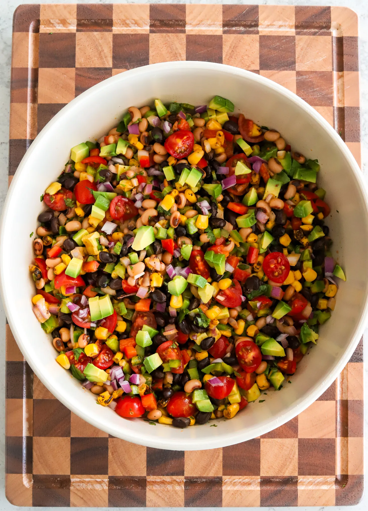

Prep Time: 20 minutes Total Time: 20 minutes Yields: 8 servings
Cowboy Caviar is like eating the rainbow — colorful, fresh, and full of flavor in every scoop. It’s packed with fiber and so good for you, but so yummy you’d never even notice. I love keeping a batch in the fridge for healthy snacking all week long.
Jump to recipie